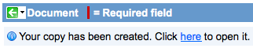
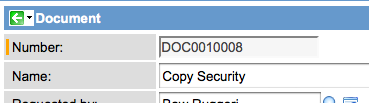
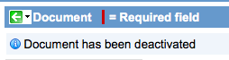

Creating a Document
Contents
1 Overview
After Managed Documents parameters have been set by the administrator, documents can be created, requested, checked out, edited, checked in, copied, and, if necessary, rolled back to an earlier version. Once documents have been added to the Managed Documents application, they can be grouped into document collections.
2 Create or Request a New Document
- Navigate to Managed Documents > Create New.
- Complete the following fields:
| Field | Input Value | |
| Number | An identifying number for the document. Automatically generated using number maintenance. | |
| Name | A name for the document. Note that the name for the document is combined with other naming components (as defined by the name format) to create the names for each document revision. | |
| Requested by | The person asking that the document be created or updated. | |
| Owner | The approver of the document request. Also responsible for setting completion date with requestors and authors. | |
| Reviewers | The user or users who review the document and provide feedback to owners and authors. | |
| Department | The department responsible for the document. | |
| Type | The document purpose. This is a choice list derived from the type parameters. | |
| Classification | The document classification, based on security, audience, and confidentiality. This is a choice list derived from the classification parameters. | |
| Audience: | The document readers, such as external or internal. This is a choice list derived from the audience parameters. | |
| State | The current status of the document in the editing and publication process. | |
| Checked out by | The user who currently has the document checked out. | |
| Description | A short description of the document. | |
| Revision Settings | ||
| Name format | The format for the name of each individual revision of the document. For more information, see Defining Name Formats. | |
| Revision format | A choice between the two digit (0.x) or the three digit (0.0.x) revision format. | |
| Auto increment revision | If selected, the revision number automatically increments each time the document is revised. | |
The User Permissions related list determines which users have rights to view and contribute to the document:
| Field | Input Value |
| User | A reference to a user who is entitled to read and contribute to the document. |
| Type | A choice list describing how the user can interact with the document. Options are:
|
The Group Permissions related list determines which groups have rights to view and contribute to the document:
| Field | Input Value |
| Group | A reference to a group of users who are entitled to read and contribute to the document. |
| Type | A choice list describing how group members can interact with the document. Options are:
|
2.1 Specifying Approvers
Once the document record is saved, specify approvers. You can have one approver or multiple approvers. For example, set multiple approvers to have one person do a quality check of the document and a different individual to serve as a final approver. Approvers are assigned a number. The lowest number (usually number one) approver always goes first, then any other approvers in ascending chronological order. Multiple approvers can have the same sequence number. For example, two approvers can do a quality check and be assigned sequence number 1. Then, two individuals can be final approvers and be assigned sequence number 2.
- Navigate to the document record.
- Right-click in the document header bar and select Add Approver.
- Add a user name.
- Select a sequence number from the drop-down list. (Lower numbers approve before higher numbers. For example, approver number one approves before number two.)
- Click Add User.
- Repeat steps 2-5 to add more approvers. == Uploading a Document ==
Once the document record is saved, upload a document into the record. A wide variety of documents can be uploaded, such as text files, spreadsheets, presentations, and PDF files.
- Navigate to the document record.
- Click the Upload/Check In Revision related link.
- Click Choose File and navigate to the file.
- Click Open.
- Check the Name and Revision Number.
- Click OK.
After the initial document is uploaded, subsequent revisions can be created by checking out the document.= Checking Out a Document =
Documents in the Managed Documents application can only be revised by one user at a time.
- Navigate to the document record.
- Select the Check Out Document related link.
- Select Download file to download the current version of the document when it is checked out.
- Click Check Out.
{kind=link}
3 Editing a Document
After checking out a document, you can edit the document and make any necessary changes.
4 Checking in a Document
After changes are made, check in the document. Once the document is checked in, other users can check out the document.
- Navigate to the document record.
- Select the Upload/Check In Revision related link.
- Click Browse and navigate to the revised file.
- Click Open.
- Check the Name and Revision Number.
- Click OK.
The Document Revisions related list updates to contain the most recent revision:
{kind=link}
5 Copying a Document
A document can be duplicated at any time. This is useful if you have an existing document that you want to use as a base for a new document.
- Navigate to the document record.
- Right-click the header bar and select Copy Document.
- An information message with a link to the new document displays:
- 
- Click OK.
- The new document is renamed and includes the word "Copy."
- 
{kind=link}
{kind=link}
| |
Note: Only the latest revision is copied. |
6 Deactivating a Document
To change the document state to Inactive, deactivate the document. This is useful when changes to a document have been put on hold. An inactive document can be reopened at any time.
- Navigate to the document record.
- Right-click the header bar and select Deactivate Document.
- A message confirms the deactivation:
- 
{kind=link}
7 Reopening a Deactivated Document
A document that has been deactivated can be reopened.
- Navigate to the document record.
- Right-click the header bar and select Reopen Document.= Canceling a Document =
Change the document state to Cancelled when no more changes will be made to the document. When canceling a document, there is no confirmation message, so ensure that you want to cancel the document.
- Navigate to the document record.
- Right-click the header bar and select Cancel Document.
{kind=link}
{kind=link}
8 Rolling Back a Document
A document can be rolled back to an earlier revision at any time. Before rolling back to an earlier revision, ensure that the document is not checked out and that you have Editor or Owner permissions for the document.
- Navigate to the document record.
- In the Document Revisions list, click the revision to which you want to roll back.
- Right-click the header bar and select Rollback. The Rollback to Revision dialog box displays. The name and revision number are new. The note specifies the revision to which you are rolling back.
- Change any information on the Rollback to Revision dialog box as necessary.
- Click OK. The latest revision is now the revision you selected for rollback.= Creating a Document Collection =
{kind=link}
A document collection is a set of individual documents. After documents have been uploaded into Managed Documents, organize the documents by grouping them into collections.
- Navigate to Managed Documents > Document > My Collections.
- Select New.
- Type in a Name.
- (Optional) Type in a Description.
- Click Submit.
- Click on the name of the collection you created.
- Click Edit.
- On the left, double-click an available document or select a document and click Add.
- Click Save. The Document Collection page displays and the individual documents in the collection are listed:
{kind=link}